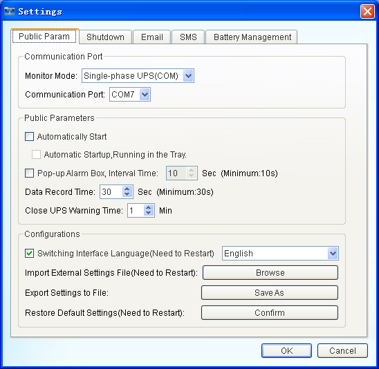
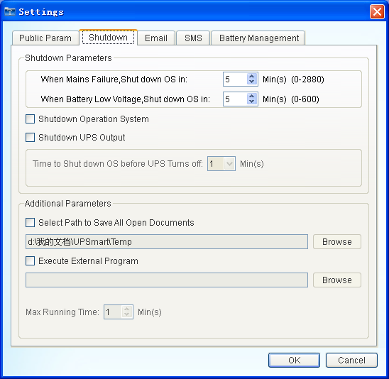
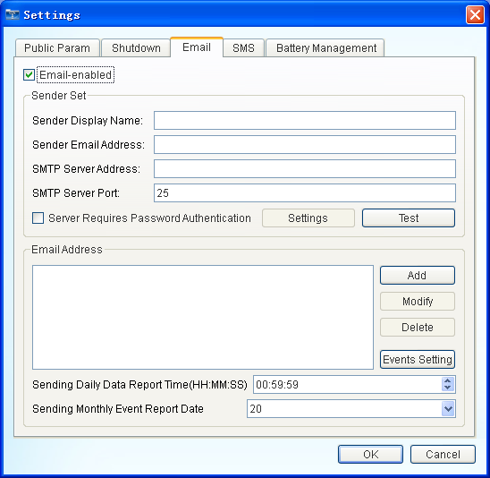
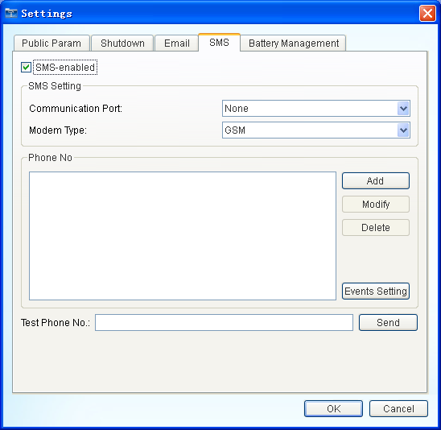
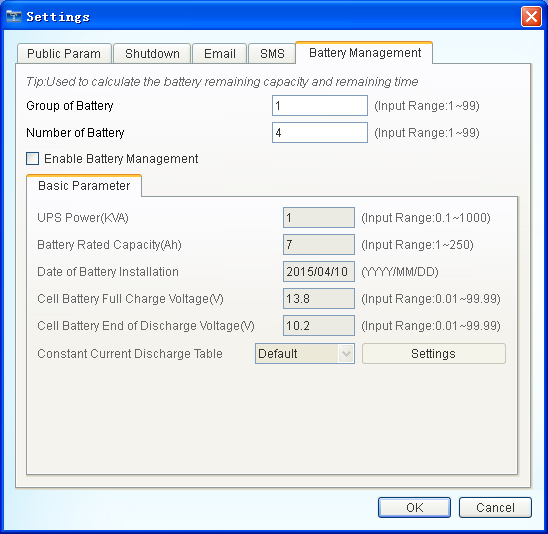

| UPSmart User Manual |
| Settings |
|
|
|  |
| Figure 1£ºPublic Param |
|  |
| Figure 2£ºShut Down |
|  |
| Figure 3£ºEmail |
|  |
| Figure 4£ºSMS |
|  |
| Figure 5£ºBattery Management |
Note: The battery management functions only as an auxiliary function, the results are not entirely accurate.